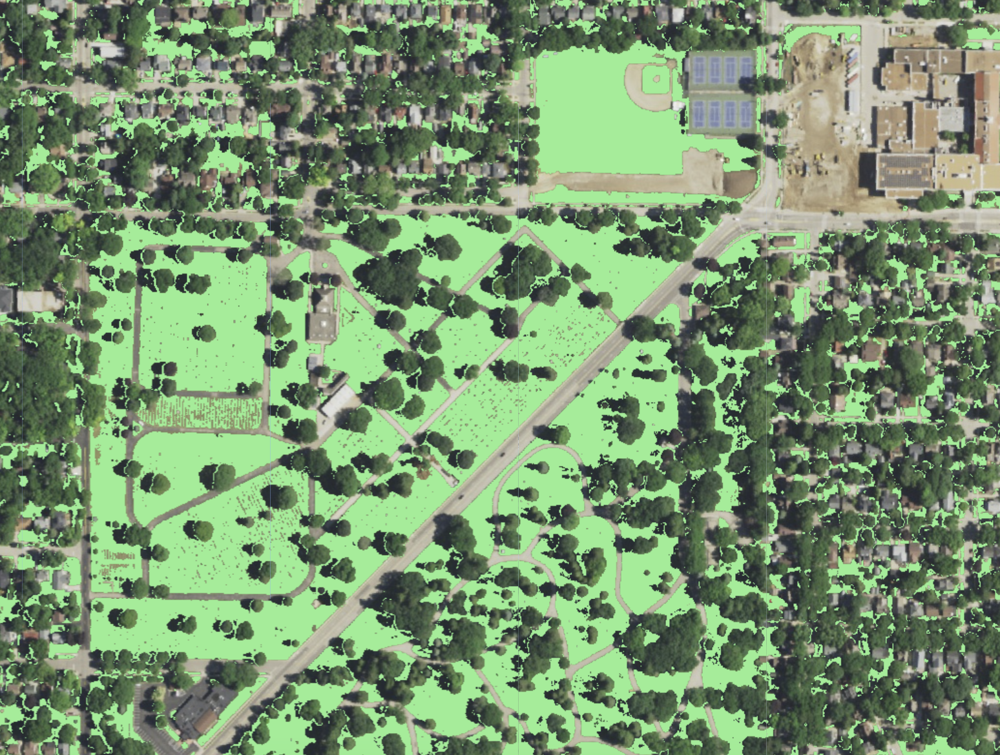
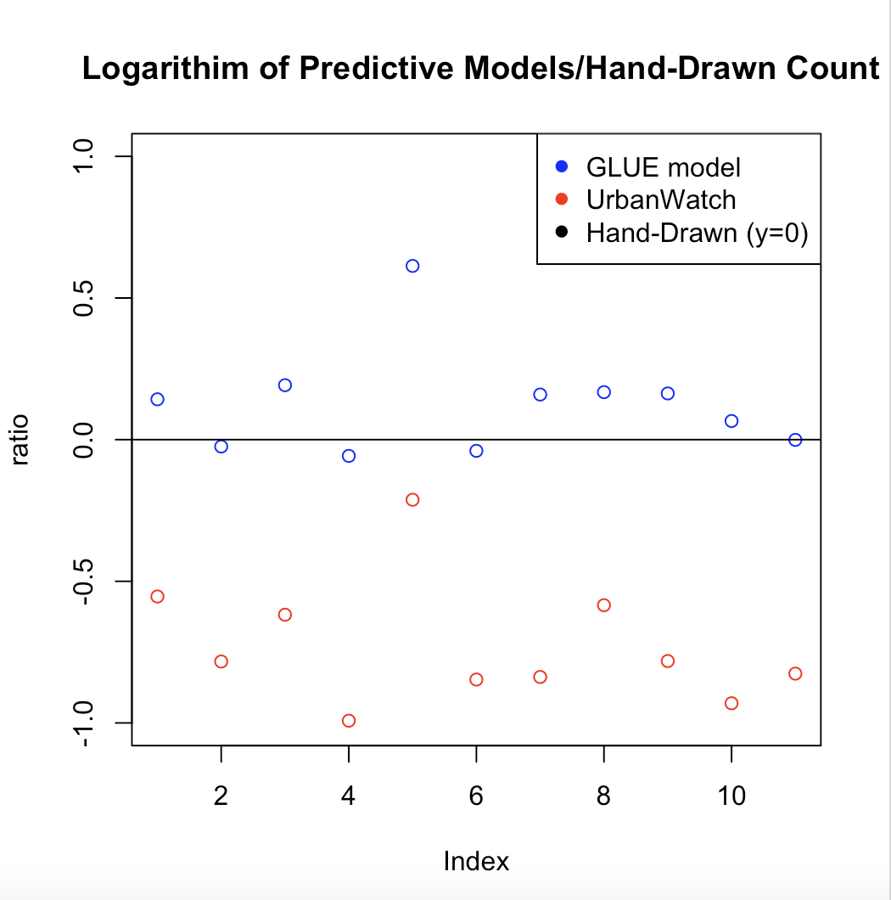
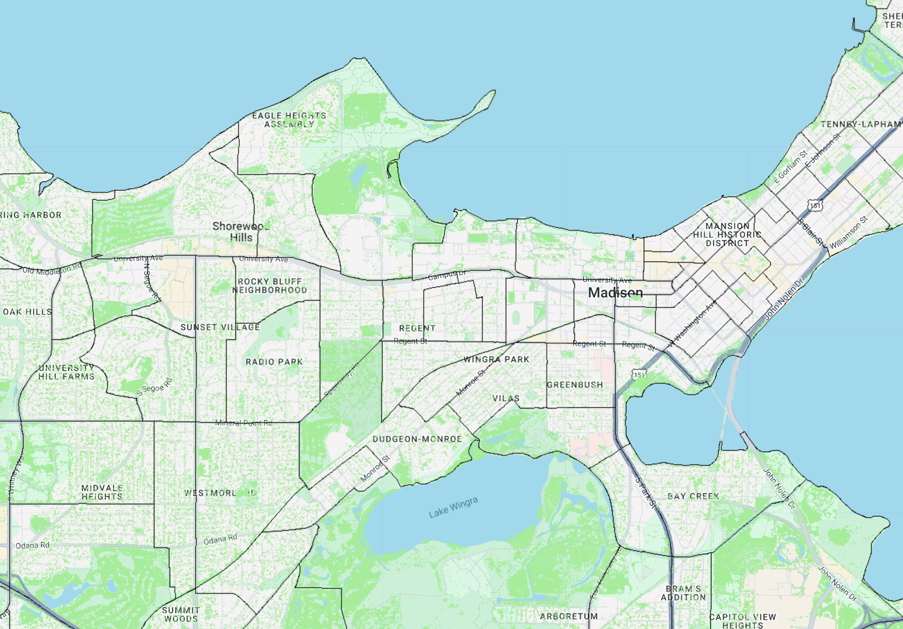

Remote Sensing on NAIP Imagery for Lawn Modeling
Creating a workflow to map lawns in residential neighborhoords and analyze demographics
Methods

Estimating lawn cover from NDVI
Variables from NAIP imagery were combined with building, pixel ratio, and canopy height statistics to calculate lawn cover

Regression against UrbanWatch model
Compared model to a popular literature model and hand drawn GIS maps, found model is more accurate in residential neighborhoods

Results
Ran regressions, found associations between land ownership and census-block demographics